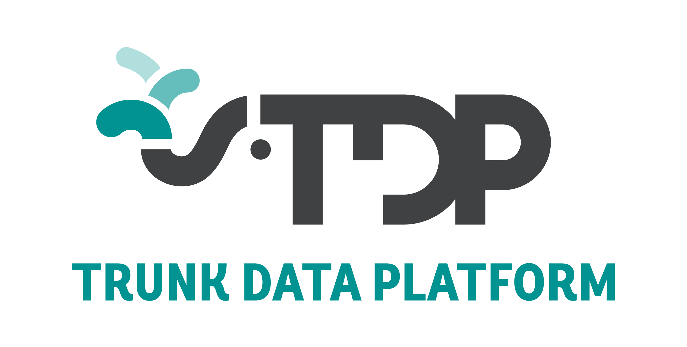
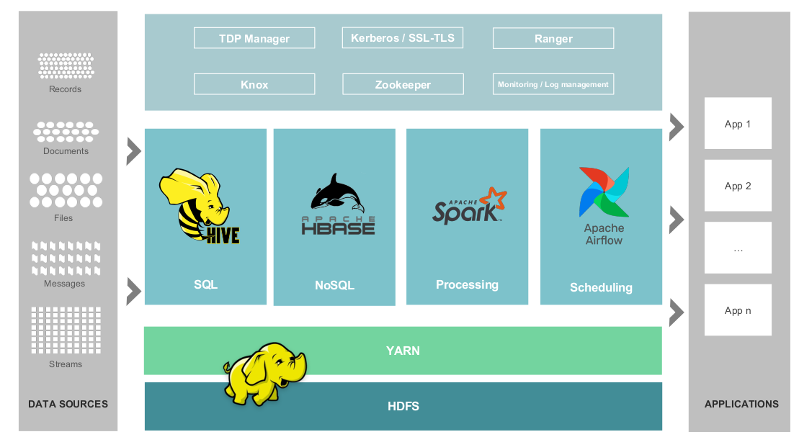
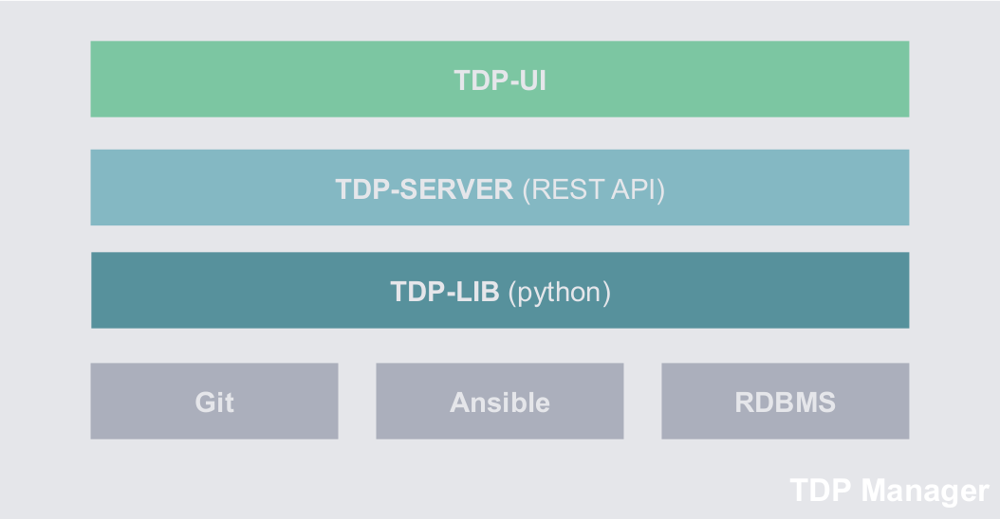

Qu'est-ce que TDP?
Trunk Data Platform est une distribution Data et Open Source avec une licence Apache V2.
La distribution est co-construite par EDF & La DGFIP (Direction Générale des Finances Publiques),
via l'association TOSIT. La stack est construite à partir des sources Apache des différents
composants.
Pourquoi Trunk?
En référence à la trompe de l'éléphant, logo d'Hadoop.
Que faisons-nous dans TDP ?
Nous partons des sources Apache, nous alignons les versions, compilons les sources, jouons les tests
d'intégrations, générons les binaires et déployons les composants.
Est-ce que TDP est gratuit ? et concernant son support ?
TDP est une stack 100% gratuite, communautaire et non-propriétaire que vous pourriez l'utiliser dans
votre contexte sans aucune contrainte.
Par contre, comme TDP est un produit non commercial, nous serons dans l'incapacité de vous offrir un
support ainsi qu'une garantie de sa bonne intégration pour vos déploiements en production.
Les entités qui utilisent la stack en production s'appuient, pour son support, soit sur une
expertise en interne soit sur l'expertise des
entreprises spécialisées dans ce domaine à travers des marchés publiques ou des appels
d'offre.
Caractéristiques
-
Open source : le code de toutes les technologies utilisées est disponible sur notre Github publique avec une licence Apache.
-
Gratuite : vous pouvez utiliser toutes les technologies et tous les services et composants de TDP de façon gratuite.
-
Data Centric : TDP respecte le cycle de vie de la donnée en proposant des technologies et des patterns pour gérer la donnée de bout-en-bout.
-
Hybridation environnement : compatible à la fois avec des déploiements sur le cloud privé, public ou on-premise.
Fonctionnalités
-
Déploiement automatique : déploiement automatique avec des standards DevOps accessibles à la fois pour l’utilisation et la contribution en se basant principalement sur des collections Ansible.
-
Maîtrise du cycle de Build : nous proposons une image docker avec toutes les dépendances et commandes requises afin de lancer des builds automatiques sur toutes les technologies de TDP Core.
-
Gestion de cycle de vie des composants : grâce à TDP Manager, vous aurez une gestion complète de tous les services et composants de TDP Core en prenant en compte leurs dépendances sur l’ensemble des opérations telles que gestion de la configuration, arrêt, relance, etc.
-
Intégration native entre les technologies de la stack : une fois TDP installé, vous aurez une intégration native entre tous les composants et services sans aucun effort d’intégration de votre part.
-
Multi Tenancy : tous les services et composants de TDP sont intégrés avec une configuration permettant l’hébergement de plusieurs applications, utilisateurs et projets sur le même cluster avec une forte segmentation en termes de sécurité et de gestion de ressources.
-
Gestion des ressources statiques et dynamiques : une centralisation et unification de la gestion de toutes les ressources (comme la mémoire, cpu, disques, ports, etc) entre les composants.
-
Haute disponibilité : TDP offre un mode de déploiement en haute disponibilité permettant d’avoir une forte résilience suite à la perte d’un équipement physique (e.g. disque, machine, rack, équipement réseau, etc)
-
Sécurité : TDP est une stack sécurisée by design, ce qui signifie l’obligation de respecter les patterns et contraintes de sécurité à travers :
-
Authentification Kerberos sur tous les composants avec une intégration native via tous les protocoles proposés (e.g. HTTPS via SPNEGO, RPC, etc).
-
Gestion des autorisations et Audit : une gestion centralisée avec Apache Ranger permettant d’unifier et tracer l’ensemble des accès et de règles d’autorisation sur l’ensemble des ressources du cluster (e.g. table Hive, table HBase, queues YARN, etc).
-
Protection des données : le chiffrement des données est implémenté à la fois pour les échanges à travers le TLS, SSL et SASL ainsi qu’au stockage grâce à une intégration complète de Ranger KMS.
-
Sécurité périmétrique : une intégration complète de la Gateway Knox qui vous permettra d’accéder à tous les services du cluster tout en respectant les principes de la sécurité périmétrique en définissant un seul point d’entrée.
-
-
Monitoring : toutes les métriques applicatives sont exposées à travers des ports JMX permettant une intégration simplifiée avec votre système de monitoring ou par le projet tdp-obesrvability.
-
Logs Management : une standardisation de la gestion des logs sur l’ensemble des technologies de la stack avec une rotation automatique et des options avancées afin de simplifier leur intégration avec votre système de logs Management ou le projet tdp-obesrvability.
Architecture et Composants
Architecture et composants de TDPTDP Core
Les composants disponibles et complètement intégrés à TDP sont les suivants :
-
HDFS (Hadoop Distributed File System): un système de fichier distribué, résilient et conçu pour optimiser le stockage des données massives avec des performances élevées en écriture/lecture pour les opérations en mode FULL SCAN.
-
YARN : un gestionnaire de ressources (mémoire, cpu) pour gérer moteur de traitement de données comme MapReduce, Spark, Tez, etc.
-
HBase (Hadoop Database): une base de données NoSQL initialement conçue pour Hadoop afin de répondre à des besoins d’accès aléatoires unitaires (Random Access).
-
Hive : une couche de structuration à la lecture (Schema on Read) des données gérées par les différents systèmes de stockage (e.g. HDFS, HBase, etc.) afin de simplifier leur requêtage avec des standards comme HQL (SQL like).
-
Kerberos : le standard d’authentification permettant l’optimisation des opérations distribuées avec des machinismes comme le Delegation Token.
-
Knox : un service Gateway proposant un point d’entrée vers toutes les technologies de la stack pour vos besoins de sécurité périmétriques.
-
Ranger : une gestion des autorisations et de l’audit centralisée.
-
Spark : un framework de traitement distribué avec des modules SQL et de Machine Learning.
-
Tez : un framework de traitement distribué optimisé et utilisé par Hive.
-
Zookeeper : permettant d’assurer le consensus et le partage de la configuration et des états des composants et services core d’un cluster TDP.
TDP Ansible Collections
Le standard DevOps de déploiement qui a été choisi pour TDP est Ansible.
Nous vous proposons donc un ensemble de collections et de projets Ansible pour faciliter le déploiement des différents services et composants :
-
tdp-getting-started : un projet ansible pour déployer TDP sur n’importe quel environnement. Ce projet vous permet aussi de faire un déploiement en mode Sandbox à travers des VMs gérées par Vagrant pour des tests en local. Il fait appel à d’autres collections Ansible :
-
tdp-collection : une collection ansible pour déployer et gérer le cycle de vie des services et composants de TDP Core.
-
tdp-collection-prerequisites (optionnel): une collection ansible pour déployer les pré-requis de la tdp-collections comme KDC, LDAP, etc.
-
tdp-collection-extras (optionnel): une collection ansible pour déployer quelques technologies sans avoir forcément le même niveau d’intégration que celle du TDP Core comme :
-
Hue (Hadoop User Experience) : une interface web open source vers les services de TDP Core.
-
Livy: une interface REST pour Spark afin de faciliter son intégration dans votre écosystème.
-
JupyterHub : pour des déploiements dynamiques de JupyterLab sur yarn proposant des notebooks python, pyspark, shell, etc.
-
Kafka : un bus de message distribué orienté événements pour vos besoins en streaming.
-
Airflow : un orchestrateur pour concevoir, implémenter et planifier vos pipelines data
TDP Manager (optionnel)
Architecture de TDP ManagerJusqu’à cette étape, les projets/collections Ansible utilisés permettent de déployer les technologies et de gérer leurs cycles de vie de façon unitaire. Afin de pouvoir gérer les composants et services entre eux, de pouvoir sécuriser les opérations d’administration et d’améliorer leur accessibilité à travers une interface REST et graphique, nous vous proposons TDP Manager avec ses composants :
-
TDP-LIB : code python permettant le versioning de la configuration par service et de gérer les dépendances entre les différentes opérations.
-
TDP-SERVER : une interface REST vers TDP-LIB ajoutant une couche d’authentification et d’audit pour plus de traçabilité.
-
TDP-UI : une interface graphique pour faciliter l’utilisation de TDP-SERVER
L’utilisation de TDP Manager est optionnelle et non obligatoire. Les collections Ansible peuvent suffire dans certains cas suivant votre contexte.
TDP Observability (optionnel)
TDP Observability vous propose une architecture de référence pour gérer les logs et les métriques des composants/services TDP de la collecte jusqu’à la restitution à travers les technologies suivantes :
-
Prometheus : pour la collecte des métriques et la gestion des métriques
-
promtail : pour la collecte des logs
-
Locki : pour l’entreposage des logs
-
Grafana : pour la restitution des tableaux de bord d’observabilité
TDP Obervability propose une architecture d’observabilité générique et modulaire qui peut s’intégrer avec votre contexte avec des contraintes technologiques. Dans ce sens, vous pourriez remplacer n’importe quel composant par une autre alternative ou bien intégrer l’ensemble avec votre existant.
TDP Build
TDP Build propose principalement une image docker avec toutes les dépendances pour pouvoir compiler, tester et reconstruire les services/composants de TDP Core. Il peut être très utile dans le cas où vous souhaitez apporter des modifications à ces technologies.
-
Roadmap et Nouveautés
-
Présentation au salon Big Data & AI Paris – septembre 2022 : Présentation Technique, Présentation Métier
-
Présentation au QA Financial London 2022 : 18 octobre 2022
-
Présentation au salon Big Data & AI Paris World – novembre 2022: Présentation Technique, Présentation Métier
-
Réunion (Février 2023) avec les membres et partenaires ToSIT afin d’étudier et planifier des futurs travaux pour une potentielle intégration avec les architectures Cloud Native à base de Kubernetes, stockage objet, etc.
-
Mise en production chez RTE et l’OCDE : Janvier 2023
-
Publication de la première RELEASE stable de TDP : Avril 2023
-
Présentation de TDP au World Data Summit à Amsterdam : Mai 2023
-
Salon Big-Data - AI Paris (Palais des Congrès) prévu les 25 et 26/09/2023 (au stand TOSiT/TDP)
-
Salon Big-Data & AI World (Porte de Versailles) prévu les 15 et 16/11/2023 (au stand TOSiT/TDP)
Contributions et Contact
Pour contribuer à TDP, nous vous proposons de passer par le github du TOSIT sous plusieurs panels :
-
Discussions GitHub : toutes les prises de décision et les choix de technologies sont faits à travers ces discussions. Vous pouvez à tout moment, nous faire des propositions ou contribuer à nos discussions en cours.
-
Issues GitHub : vous pouvez ouvrir une ou plusieurs issues pour chaque projet GitHub en détaillant le problème recentré ou la fonctionnalité que vous souhaitiez avoir.
-
Pull Requests : nous étudions aussi vos Pull Requests que vous pourriez soumettre par projet GitHub afin de répondre à une Issue précédemment créée et qui doit être référencée dans cette PR.
-
Pour finir, vous pouvez toujours aussi y contribuer par une simple utilisation de TDP en mode Sandbox ou sur des environnements distribués.
TOSIT
TOSIT est une association française, Loi 1901.
C'est une structure de soutien à l'Open Source, qui vise à soutenir l'émergence de codes,
logiciels et solutions informatiques libres.